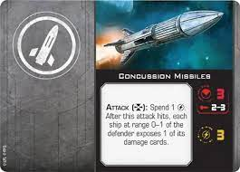
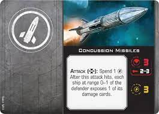

Overview
Purpose
This Website serves as a introduction to the table top game Starwars X-Wing. A brief explaination of the game, the diffrent factions, and A page on recomenationed expansions will be added.
Audience
This is going to be a website where new members of our X-wing club can explore various expamsions, rules, and ships so they can start the journey of building there own fleet of starfighters.
Branding
Website Logo

Style Guide
Color Palette
Palette URL:
https://coolors.co/e8be03-000000-62ff00-cd5900-a81713-ffffff-1f5a65
| Primary |
Secondary |
Accent 1 |
Accent 2 |
| Black |
Cornell red |
White |
Midnight green |
Typography
Heading Font: Aldrich
Paragraph Font: Kanit
Normal paragraph example
Welcome to The Outpost! here youy can find all the infortmaiton a commander will ever need. From expansion packs, to basic rules, and strategies you'll be prepared for you next battle. In starwars X-wing you will find 7 waring factions: The Rebellion, The Empire, Scum and Villany, Republic, Speratists, and the newly added Resistance, and First Order. Battle across ages as galatic heros from all sides of the fight.
Colored paragraph example
Focus up commander. Battles will vary every match from all the various ships, pilots, and obstacles that you will face in this dog fight across the unviverse. prepare yourself and ready your troops. To your Battle staions!
Navigation
[Page 2]
Content
The Main-Hangar
Welcome to The-Outpost!
Introductions
At the Outpost we assist new commanders get started on their first lists, help explain rules, set up, and how to have the most amount of fun while playing Star Wars X-wing. With so many rules, ships, pilots, abilities, obstacles, and phases new players can easier become overwhelmed. Commander, you have no need to fear as that is exactly why we made this site for you.
This is the Main Hangar where you will receive the basic information that you will want to survive this dangerous galaxy. Be warned commander there are several factions that are out to rule the galaxy. Don't worry, we are here to help advise you before your next battle. In This tabletop dogfight, you will come across Seven separate factions each with its own characteristics, ships, and abilities. Here at The Outpost, we have all the information you need about each faction below their ships, pilots, and abilities. We also will be updating this site as needed with new strategies, updates to the game, and new expansions.
What you need to start playing
To start playing you will need to acquire the Star Wars XZ-wing 2.0 core set which comes with 1 T65 X-wing and 2 imperial Tie fighters. This will get you the preprinted models, the cards, pilots, obstacles, dials, dice, and other components that you need to start playing. You will also get a copy of the old 2.0 rule book. Since Atomic Mass games over took the production, they came out with a 2.5 rule book you can access online here “”. It's quite extensive and should be used solely for technicalities and specific rule modifications.
Images for the Home page


Factions
Commander The Seven factions that are acquirable in Star Wars X-wing are The Rebellion, The Galactic Empire, Scum and Villainy, The Galactic Republic, The Separatists, The Resistance, and the First Order. You will be able to battle across the ages in fast-paced, intense dogfighting arenas. The first player to defeat all enemy ships and take control of the area will be the victor.
On this website, we have a page dedicated to Each faction and their load outs, an easy explanation of rules, and a page dedicated to known strategies. Please note that Due to the many varying rules and technicalities, you will want to refer to Atomic Mass Games but for basic gameplay we got you covered.
Rebel Allaince
Galatic Empire
Republic
Seperatist Allaince
First Order
Resistance
Details and associated ships to be added for each faction

Game Components
Ships
Each faction has a Loadout of ships specifically designed for that faction and their accompanying pilots, and abilities. Each ship has specified stats. These stats are known as attack value, evading value, and Hull. Some ships come with additional tokens such as shields, force ability, and charges that will also be displayed as a ship's stats. These additional tokens usually come from pilot and ability cards but can occur with ships by themselves. Ships also have a movement dial specific to that ship. This allows you to control the movement of your fleet for each ship and to acquire strategic positions to blast down an enemy.
Pilots
Pilots are the aces of your fleet. Each has special abilities and specific actions that they can make. Actions are what they sound like. During the action phase, you will be able to perform an action such as focus, target lock, barrel roll, evade, boost, and several others. Pilots will also determine your initiative. An initiative is a special number that determines when a player moves and attacks. Simply put, the lowest initiative will move first while the highest initiative will attack.
Upgrade Cards
Now for upgrade cards. upgrades provide specialized actions that your ship can perform. There are types of upgrade cards: astromechs, ship modifications, talents, force abilities, crew, special weapons (missiles, torpedoes, cannons etc.), illicit, configuration, sensors, tech, and title. Each ship has specific upgrades that they can access and can load up until their loadout points are full.
Game Dice
Through out hte game to determine attacks, defenses, and other various chance items we use attack dice and defending dice. Attack dice are bright red and have 4 sides a damage, critical damage, focus, and a blank. defender dice are Green and also have 3 sides, evade, focus, and blank. When attacking the atter rolls the red dice while the defender rolls the green dice. For each evade icon the defender removes damage icons first and then if there are any more evade icons then the defender can remove any critical damage. There are many ways that dice may be modified by using pilot and upgrade card ablilties.
 


Wireframes
The Main Hangar
Factions
Basic rules and start up